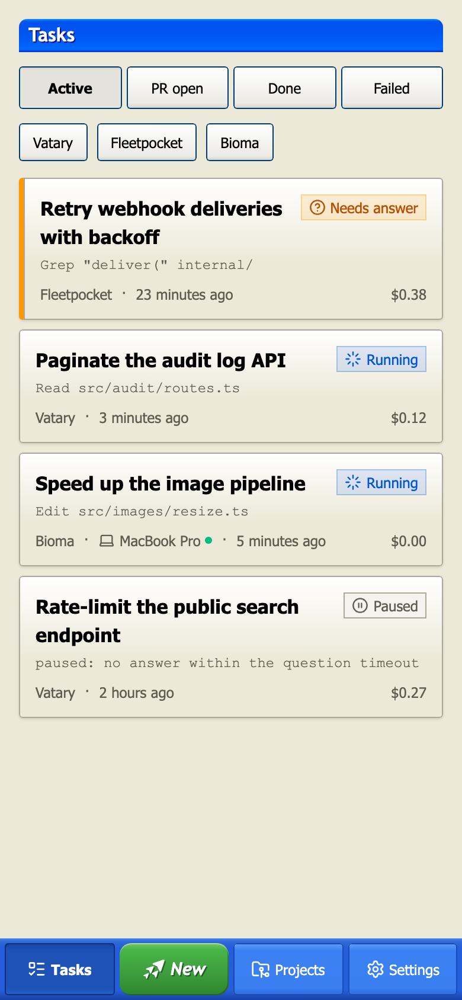
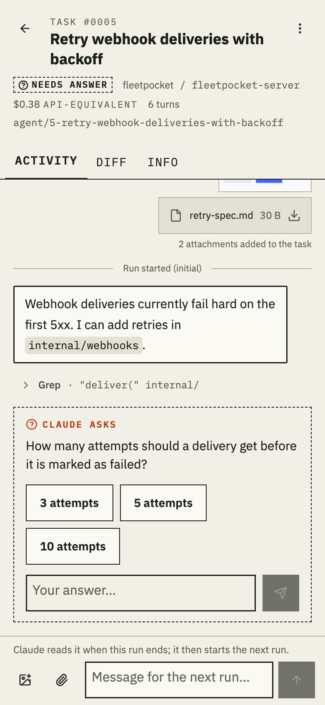
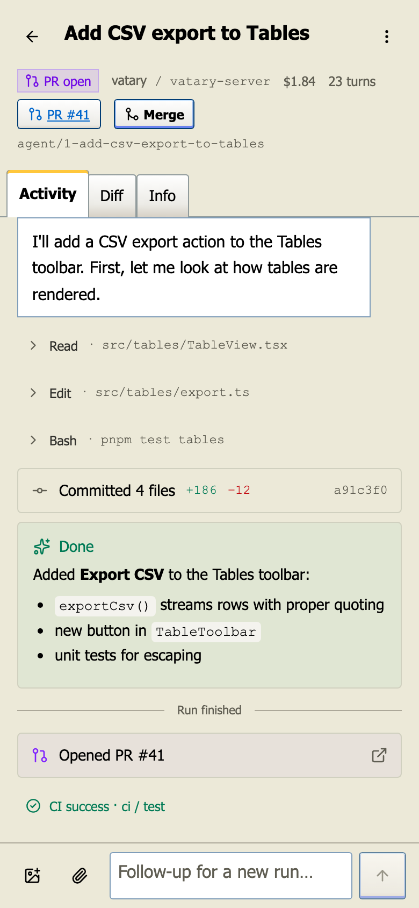
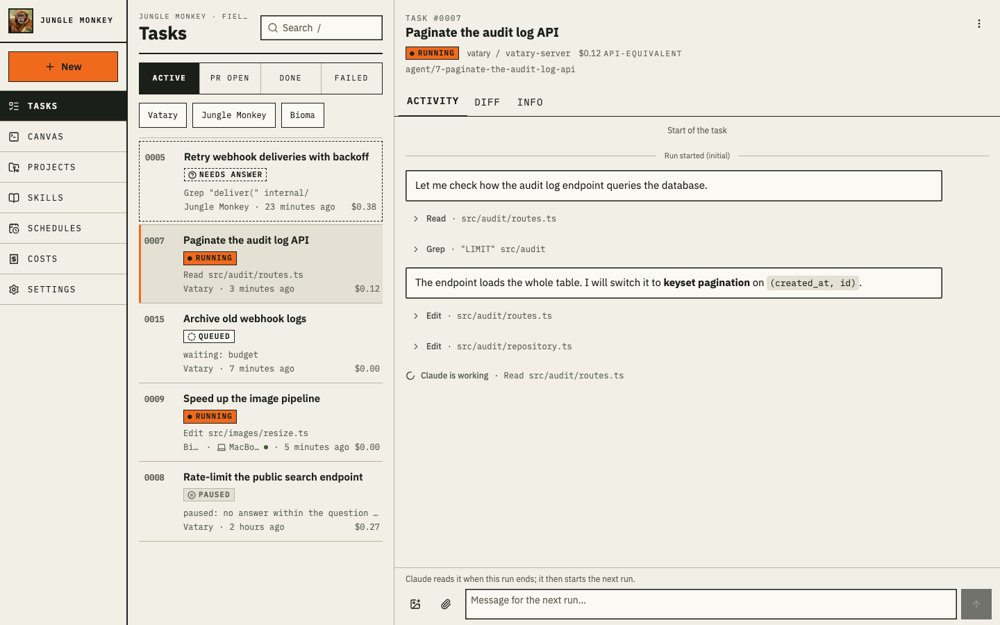

Section 01 · Deployment
Install
npx jungle-monkey- Server, database and web app on your machine; the browser opens logged in
- Needs Docker and one agent login or key (Claude, Codex or Cursor)
- No domain, server or
.env; stops when the computer sleeps
curl -fsSL https://raw.githubusercontent.com/AndrewSl105/jungle_monkey/main/deploy/install.sh | sh- A small Linux server (Ubuntu 24.04) and a domain; Docker is installed if needed
- Runs 24/7: phone app (PWA), optional Telegram bot, your own GitHub App, PRs and CI
- Run it again later to update; it keeps your
.env
docker compose -f docker-compose.deploy.yml up -ddeploy/docker-compose.deploy.ymlwith Caddy, the web app, the server, Postgres and a Docker socket proxydeploy/cloud-init.yamlfor unattended installs on Hetzner or DigitalOcean- Or every step by hand, to control each piece
| Computer | Server | Your way | |
|---|---|---|---|
| Runs on | your laptop | a Linux VPS | anywhere |
| GitHub needed | not to start | yes, own App | yes, own App |
| Phone access | own tunnel | PWA, Telegram | PWA, Telegram |
| Runs 24/7 | no | yes | yes |
| Setup | ~1 min | ~10 min | your pace |
Section 02 · Procedure
How it works
- 01
Describe the change.
Type it on your phone and attach screenshots or files.
- 02
The agent works on a new branch. ● Running
Pick Claude Code, Codex or Cursor per project or per task, and follow every step live.
- 03
Answer its questions. ? Needs answer
When Claude needs a decision, the task shows its question with answer buttons. Codex and Cursor make their own choices and list open questions in the summary.
- 04
Get a pull request. ✓ PR open
Read the summary, the PR and the CI result, and send a follow-up if something needs changing.
- 05
Get it back green. CI ✓
Optional CI auto-fix: a failing check starts a minimal fix from the trimmed CI logs, up to a few attempts. A fix that touches CI config or tests waits for your OK.
- 06
Give it your tools, not your keys. MCP
Optional MCP servers (Linear, Sentry, a database) through a gateway that keeps the credentials, enforces tool lists and logs every call. Lock the network to an allowlist; blocked hosts get a one-tap "Allow".
- 07
Know what it costs. $0.84
Every run's tokens and cost, by project, agent and day, with a CSV export. Optional monthly caps hold new runs when they are used up, with a notice at 80% and a one-tap "Start anyway".
- 08
Roll back a step. ↶ Restore
Optional checkpoints after every step that changes files. Restore any step, add "…then do it with a migration instead", and the agent continues from there. Discarded steps stay visible as an abandoned branch.
Section 03 · Exhibits
The field log




Section 04 · Security
Your keys stay with you
| Owner | One: you. It runs on your own server. |
|---|---|
| Agent container | Sealed, with only the code it was asked to change. |
| GitHub token | None inside the container. |
| Docker access | None inside the container. |
| Host network | None inside the container. |
| Pushes & pull requests | Done by your server, which keeps every key. |
| Sign-in | Password plus a code from your authenticator app. |
Section 05 · Terrain
Run it on your phone, desktop or Mac
Phone
Install it as an app
A progressive web app: add it to your home screen and it opens full screen. Also works as a Telegram Mini App.
Desktop
Any browser
Rail, task list and the open task side by side, plus a canvas of live terminals.
Mac
Optional runner
Add your Mac in Settings → Computers and choose per project or per task where it runs. One login, one task list.